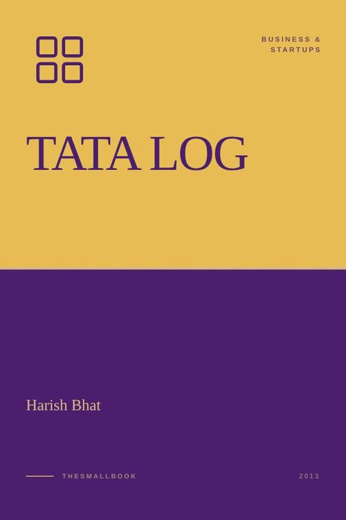

Why Did Tata Docomo Fail?
Per-Second Billing Won Millions of Users and Still Lost the Money
📜 What Happened
Tata Teleservices' GSM joint venture with Japan's NTT Docomo launched in 2009 with one blade: per-second billing ('Do One Thing'), in a market that billed per minute. It was instant folklore: millions of low-value, price-sensitive subscribers joined, and competitors scrambled to copy. But the blade cut both ways: per-second pricing optimized for the cheapest users in a sector where the real costs (spectrum auctions, regulatory charges, network capex after the 2012 court cancellations) did not scale down with usage. ARPU stayed among the industry's lowest while costs per user rose; profits never arrived. NTT Docomo tried to exit in 2014, triggering a multi-year cross-border arbitration over the share price, settled only after government intervention; the brand was retired in 2017 and the consumer mobile business was handed to Airtel in 2018. The pricing innovation entered every marketing textbook; the business entered insolvency math.
☠️ The Fatal Mistake
Pricing architecture won subscribers but not economics: the unit of pricing (the second) scaled revenue down while the unit of cost (spectrum, capex, regulation) stayed fixed or rose. Scale without margin is just accelerated bleeding.
🧠 The Lesson (Free for You)
In commodity markets, the unit you price in is a strategy, but it is not a business model. Make sure value captured per user beats cost per user across a full regulatory cycle, or your innovation is a giveaway with better branding.
The Antidote Book

A Tatabrand insider retells eight decisive stories (Tanishq, Taj, Docomo, Jaago Re, Westside, Croma and more) and extracts the operating habits behind India's most trusted brand.
📖 OPEN THE FULL INTERACTIVE BREAKDOWN →Questions people ask about Tata Docomo
Why did Tata Docomo fail? Pricing architecture won subscribers but not economics: the unit of pricing (the second) scaled revenue down while the unit of cost (spectrum, capex, regulation) stayed fixed or rose. Scale without margin is just accelerated bleeding.
How much was lost? 40M+ subscribers at peak; JV wound through years of arbitration; consumer mobile handed to Airtel, brand retired
What is the lesson? In commodity markets, the unit you price in is a strategy, but it is not a business model. Make sure value captured per user beats cost per user across a full regulatory cycle, or your innovation is a giveaway with better branding.
Tata Docomo kyun fail hua? In simple English: Pricing architecture won subscribers but not economics: the unit of pricing (the second) scaled revenue down while the unit of cost (spectrum, capex, regulation) stayed fixed or rose. Scale without margin is just accelerated bleeding. The cost was 40M+ subscribers at peak; JV wound through years of arbitration; consumer mobile handed to Airtel, brand retired.
Keep digging
More business failures · Open the full Graveyard
Read the antidote book summary: Tata Log: Eight Modern Fables from Indian Business
Related failures
- Why did Skype fail? 2025 · The Verb That Lost a Pandemic It Should Have Owned
- Why did JOANN fail? 2025 · The Craft Shelf Lost Its Footing
- Why did rue21 fail? 2024 · Three Bankruptcies Were the Market's Answer
- Why did Zee-Sony Merger fail? 2024 · A $10B Media Titan Blown Apart by Promoter Egos
- Why did Tupperware fail? 2024 · The Party Ended After 78 Years
- Why did The Body Shop fail? 2024 · The Ethical Beauty Pioneer That Couldn't Outlive Its Founder's Shadow
Searchable, filterable, simple to read - they paid billions; you get the lesson.